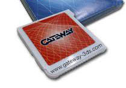

The History of Homebrew
Back in 2013, early videos and footage of a new 3DS cartridge was released. Like many games, it went unnoticed, but this one was special. It was called a flashcart, much like the old versions of the flashcarts for the DS/DSi. It was called Gateway, and was the way to the first real 3DS exploit. Gateway could take old 3DS Roms, and run them off an SD Card, which opened the way to (illegal) piracy. It used an exploit in an old cartridge to replace the Rom. The cartridge is pictured here.
One of the advantages of Gateway was the lack of need to carry around any other cards, and you could instantly load any .3ds or .cxi image. It initially only played Roms, without a GUI, and you had a seperate card. It loaded using a Gateway.dat file on the root of the 3DS SD card. It was enventually updated so that you could open a menu and play around with some of the settings, and even a cheat code engine, something revolutionary at the time (and is still hard to replicate to this day). One of these special options though was EmuNand.
EmuNand
EmuNand was something that most people wanted for a while. Nintendo updated the 3DS firmware so that you couldn't use the Gateway flashcart at all. People were pretty upset with this, so Gateway ended up making an EmuNand feature, where you can emulate your operating system to a later version when you needed to use blocked features (ones that were blocked until you updated). When you wanted to use the flashcart, you would just turn the system off and back on again, and you would return to your real OS.
RedNand
RedNand was a slightly different version of EmuNand, in which instead of Emulating the Operating System, it would redirect it. There were some advantages to this, one of which being a more open structure to the system. RedNand was created as an alternative to Gateways EmuNand. At that point, exploits were developed for various games (the most popular of which were Cubic Ninja, also known as Ninjhax). The Redirected Nand would be setup using Homebrew exploits, not used as a seperate cartridge. With Digital Titles, you could simply download a game, activate the exploit, and have RedNand on the system without any physical access required.
A9LH
While this section does skip over some very important pieces of the story, it does get the job done. A9LH was created as an alternative to RedNand / EmuNand. Instead of running an OS with custom signatures after activating it from another exploit, A9LH would begin at every single time you turn the console on. One of the problem with the newest updates is that they killed many exploits, rendering some hacks unusable. So A9LH, combined with various Custom FirmWares (CFW), would allow for patches to the OS on boot. The most popular of them at the time were Cakes (often regarding a CFW for experts, with its extreme customizability), and Luma, a CFW well regarded in the community for being user-friendly and kept up to date with rigorous features and patches added nearly every week. As of the time of this writing, the current version is 6.6, after about a year or two (depending if you kept with private development) of development. Some of these patches added in older exploits, protection from the device corrupting the OS permanently, and running before the OS, meaning that it had zero dependancies on anything other than the bootrom. Because of how stable and kept up to date it is, (while Cakes has fallen out of development, and the only other “true” CFW would be Corbenik, which is plenty behind standards right now) Luma + A9LH is the golden standard for a hacked 3DS.
The Bootrom, and SigHax
The bootrom is currently being cracked. Nintendo’s security tries to be better as time goes on, but one thing they cannot keep up with, is proper encryption, which actually ended up being the end of their devices. One of the problems they have is that keys are reused across the OS, like in the case of KeyX, and KeyY, where Nintendo used the same key types across the Wii U and 3DS. The KeyX is crackable on the 3DS, and KeyY was crackable on Wii U. They’re different from device to device, but that doesn’t change how they can be derived from each other. Someone managed to crack KeyX on a Wii U, along with KeyY, meaning that they know how they are derived from each other. They applied and tested this, and found something pretty scary, and interesting. If you can crack one of them, and use a specific formula, you can find the other. And since the Wii U Keys are the same on the 3DS, they applied this to the 3DS, and got KeyY on the 3DS. Part of the reason we needed KeyY was because we needed another type of Key, known as a One Time Pad, which under normal circumstances, is pretty much uncrackable. Guess what. The OTP is derived from both keys. Which is what let us get A9LH. Well, as it turns out, history repeats itself. A new type of exploit, known as SigHax, has something actually pretty scary. Nintendo applies a Global Signature across all software to make sure that it’s Kosher, and from them or someone affiliated with them. Well, turns out the signature is a derivative of the Bootrom. So if you crack the bootrom, you can get the Signature. If you get the signature, you can sign software that is not made by Nintendo, or even firmwares. Meaning that a new type of virus can be applied. You could potentially distribute Carts, with forced “firmware updates”, that corrupt the OS. SigHax would primarily be used to open up entrypoints on the newest firmware. The idea of attacking a 3DS is probably not something you would see, but it opens the possibility, and it shows how irresponsible a company is about its security from time to time, over and over again. For the last ten years, every single one of their pieces of hardware have been exploited, and the Brand New Switch has already been cracked, with a webkit exploit allowing the User to go to other websites (when it technically is supposed to restrict traffic to their website for settings).